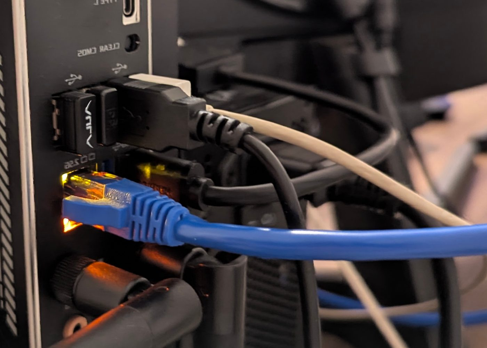
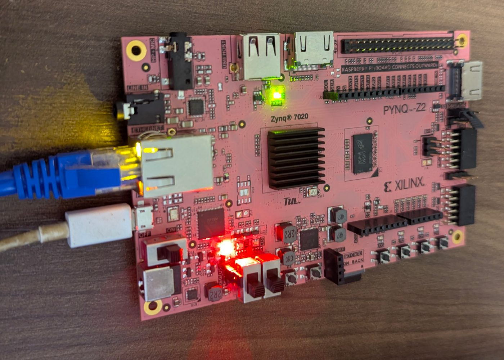

Work taken from requirement to verified hardware.


The hardware tier of OpenJLS verification, and the one simulation cannot stand in for. An image goes in over Ethernet and its compressed .jls file comes back — the encoder exercised end to end on a real device rather than in a testbench.
Verified in hardware across the full corpus of 287 images spanning every supported pixel depth: the FPGA output is byte-exact against the CharLS reference. The 581 MB corpus comes back losslessly compressed to 356 MB. The whole hardware-in-the-loop sweep is reproducible from a clean clone.
View the demo on GitHub →New demonstrations and case studies are added here as they are verified in hardware.